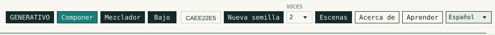
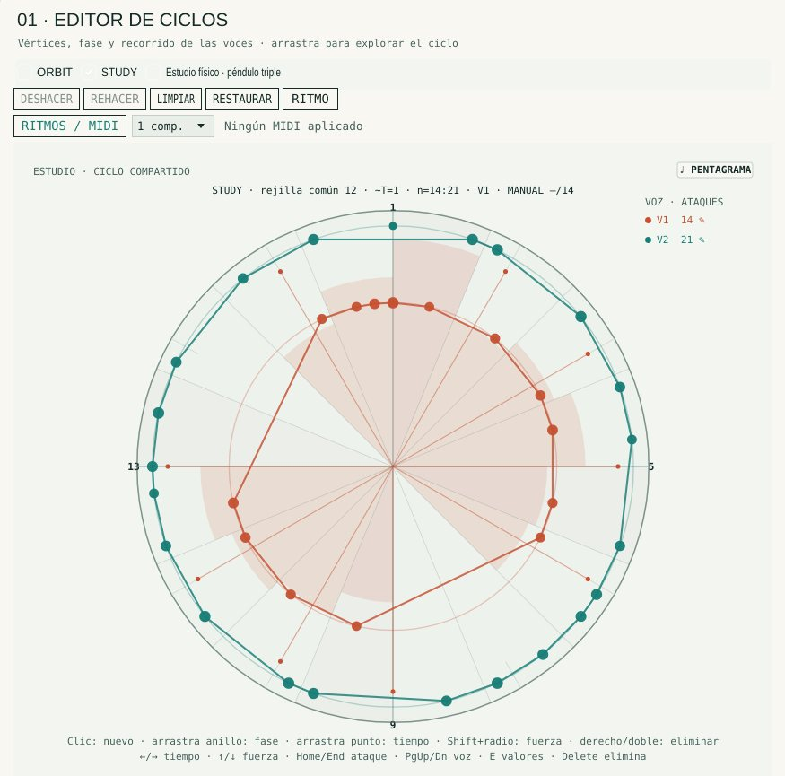
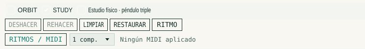
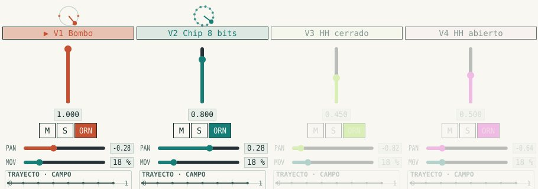
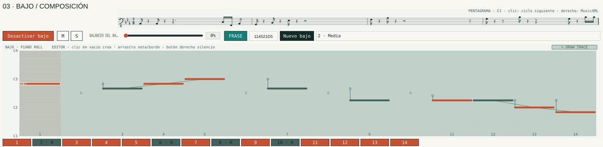
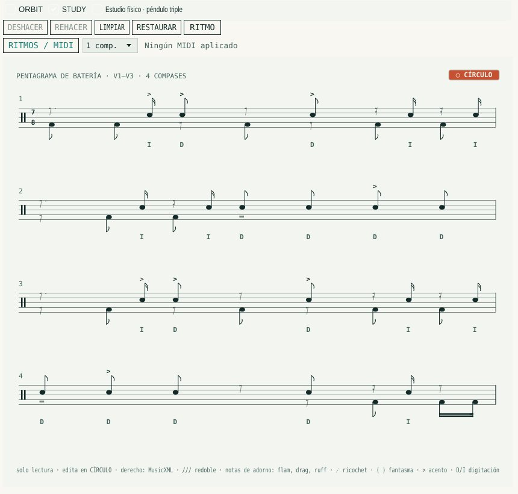

Ocho pasos para tocar, escribir y guardar un ritmo en Batruc. Los nombres entre comillas son los de la interfaz.
1. Empezar · la semilla
Abre Batruc y haz clic en «Reproducir». La semilla — el código de ocho caracteres del encabezado — escribe toda la composición: figuras de bombo, caja y charles, la tonalidad del bajo y la forma en siete ciclos.
«Nueva semilla» sortea otra composición.
Escribe un código en el campo de la semilla y pulsa Enter para volver a una semilla conocida.
«VOCES» elige cuántas voces suenan.

2. RITMO o GENERATIVO
El botón de modo, en el encabezado, alterna las dos maneras de tocar.
«RITMO» toca exactamente lo escrito: células, MIDI, figuras. Nada actúa a escondidas.
«GENERATIVO» añade las máscaras del campo, las leyes de intensidad y la forma.
«GEN», en la barra inferior, regula la profundidad del GENERATIVO (30 % al empezar).
3. Leer y editar en el Study
En «Componer», «STUDY» muestra el ciclo compartido: cada voz es un anillo y cada punto un ataque.
Haz clic en un tramo vacío del anillo para crear un ataque; clic derecho o doble clic en el punto lo quita.
Arrastra un punto para mover solo ese ataque; arrastra un tramo vacío del anillo para desplazar todo el stem.
Mayús + arrastrar hacia dentro o hacia fuera ajusta la fuerza.
«DESHACER», «REHACER», «LIMPIAR» y «RESTAURAR» actúan sobre la voz seleccionada.

4. Otras figuras
El botón «RITMO» del Study abre el menú de escritura de la voz seleccionada.
Redistribución euclidiana de los ataques de la célula.
«Escribir figuras del péndulo» o «de otro modelo»: billar, Lissajous, Fourier, curvas rodantes.
«RITMOS / MIDI» trae un ritmo del catálogo (Groove MIDI Dataset) o un MIDI tuyo.

5. La caja
Los ornamentos se guardan en la nota: una sola marca por ataque, y los golpes nacen al tocar.
En el menú «RITMO» del Study: «Ornamentar (caja)», «Groove de la caja (género)» — frevo, maracatu, baião — y «Microtiming medido».
En el «Mezclador», el botón «ORN» de cada stem alterna entre el golpe simple y la caja completa.

6. El bajo y la tonalidad
La semilla elige una tonalidad — doce tónicas y diez modos — y el bajo sigue la composición.
En la pestaña «Bajo», «FRASE» (activado al empezar) da al bajo voz propia: progresión de grados, respuestas y notas de paso.
El pentagrama del bajo, de 16 tiempos, está encima del gráfico; clic derecho en él exporta MusicXML.
En el «Mezclador», «PERC. EN TONO» afina la percusión en la tonalidad de la semilla (desactivado al empezar).

7. El pentagrama de batería
En el Study, la ficha «♩ PENTAGRAMA ⇄ ◯ CÍRCULO» cambia el círculo por el pentagrama de batería.
El pentagrama muestra los signos de ornamento y la digitación (D/I).
Clic derecho: «Exportar MusicXML (batería)…», para abrirlo en MuseScore u otro editor de partituras.

8. Escenas y grabación
Guarda versiones y graba lo que tocaste.
«Escenas» guarda versiones en la sesión y exporta o abre un archivo .batruc.txt.
«REC» graba el master estéreo en WAV de 24 bits; la casilla de al lado limita la duración (5 min al empezar).
«Aprender» abre el LEARN dentro de la app; «Acerca de» muestra versión, créditos y licencia.
Regla central
La generación escribe; no filtra a escondidas. Lo que el modelo escribe queda editable, y el modo RITMO toca exactamente lo escrito.